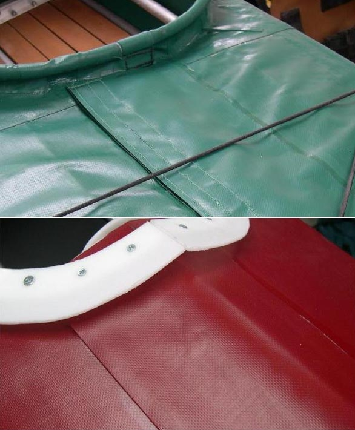

| Velcro Flap Deck Closure (1 of 5) | Menu Previous Page Next Page |
|  |
A Velcro flap can be installed over the zipper as an alternative to using tape, and is the preferred method of sealing the zipper. Two Velcro strips are sewn to flaps of PVC before gluing to the deck. Sewing Velcro to a flap and then gluing to the deck skin is easier than sewing directly to the skin.
The flap is the same size as the zipper PVC ( 5in), and covers it completely from coaming to stern. Velcro ( hook) is sewn to one side of the 5in ( 12.7cm) PVC flap and the Velcro (loop) is sewn to a seperate 1.5in ( 3.8cm) wide PVC flap. Both flaps run the entire length of the zipper.
|